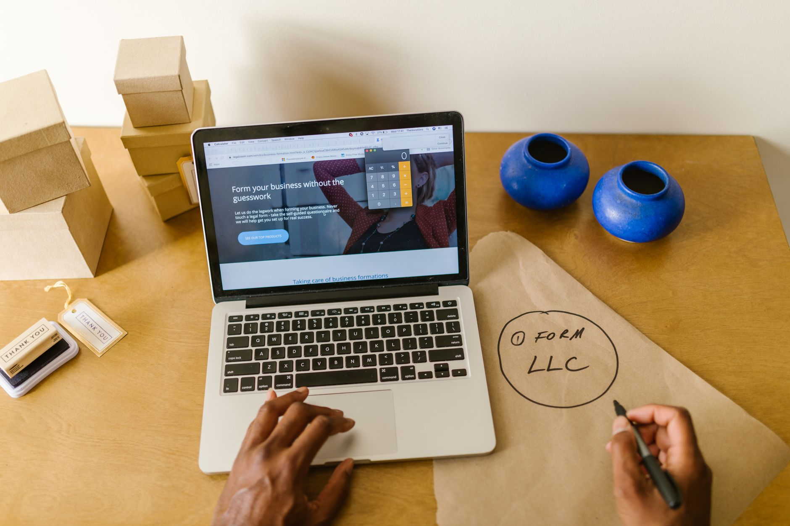

Pick a landing page when you have one specific action you want a visitor to take and a way to drive traffic to it. Pick a website when people need to find you, judge you, and learn about everything you offer before they decide. Most local businesses end up needing both, but you rarely build them at the same time, and the order matters for your budget and your timeline.

A landing page is one page with one job. A website is your full home on the internet. Below is how to tell which one your business needs right now, and when to add the other.
What a Landing Page Actually Does
A landing page is a single page built to convert. No menu, no links to a blog, no "About" tab pulling people away. The visitor lands, reads one offer, and either takes the action or leaves. That action is usually filling out a form, booking a call, claiming a discount, or signing up for a list.

You use a landing page when you are running a campaign. Google Ads, Facebook Ads, a printed flyer with a QR code, an email blast. The traffic is already warm or targeted, so you do not need to explain who you are. You need to close.
The focus pays off. The average landing page converts at about 2.35%, but the top 25% of pages convert at 5.31% or higher, according to WordStream's analysis of thousands of accounts. That gap comes from removing distractions and matching the page to the exact promise in the ad.
A roofing company running a "free inspection" ad should send clicks to a page that talks about free inspections and nothing else. One headline, three bullet points of proof, a form, a phone number. That is it.
What a Website Actually Does
A website is many pages working together. Home, services, about, contact, reviews, maybe a blog. It exists so people can find you in search, browse on their own time, and build enough trust to call you.
Someone searching "plumber near me" does not want a single-offer page. They want to see your service area, your hours, your reviews, photos of past work, and a phone number that does not make them dig. A website answers the dozen questions a buyer asks before they trust a local business with their home or money.
First impressions are visual and fast. Research from Adobe found that 38% of people will stop engaging with a site if the layout or content is unattractive. A website gives you the room to look established, which a bare landing page cannot do on its own.
The website is also where Google sends organic traffic. A landing page tied to a paid ad disappears the day you stop paying. A website keeps earning visitors for years.
How to Define Your Core Purpose
Write down the one sentence that describes what you need the page to do. Be honest about it.
If the sentence is "get people who clicked my ad to book a quote," you need a landing page. The goal is narrow, the traffic source is paid, and success is one measurable action.
If the sentence is "help anyone who hears about my business find me and decide to hire me," you need a website. The goal is broad, the traffic is mixed, and success is harder to pin to a single click.
Run this test: count the questions a visitor needs answered before they act. One or two questions means a landing page works. Five or more means you need the depth of a website.
Conversion Optimization: Where Each Wins
A landing page wins on conversion rate because it strips away choice. Every element points to the same action. There is a known idea called the rule of one: one audience, one offer, one call to action. Break it and your numbers drop.
Tactics that lift landing page conversion:
- Match the headline to the ad word for word.
- Put the form or phone number above the fold so no scrolling is needed.
- Limit form fields to name, phone, and one detail. Each extra field costs you sign-ups.
- Add one piece of proof near the button, like a review count or a guarantee.
A website converts differently. It nudges people across several visits and several pages. A visitor might read three blog posts over two weeks, then check your reviews, then call. The conversion is real, but it is slower and spread out. You optimize a website for the whole path, not one button.
Content Depth and Scope
A landing page holds 300 to 800 words and one idea. Headline, subhead, a short benefits list, proof, and a call to action repeated two or three times. Writing more usually hurts, because it gives the visitor a reason to wander or stall.
A website holds dozens of pages and thousands of words. Each service gets its own page so it can rank in search and answer specific questions. Your "drain cleaning" page targets people searching for drain cleaning. Your "water heater repair" page targets a different search entirely. That depth is the whole point, and it is why a website takes far longer to build.
Speed still matters on both. Google found that 53% of mobile visits get abandoned if a page takes longer than three seconds to load. A bloated landing page loses leads just as fast as a slow website loses browsers.
Budget and Timeline Differences
A landing page is cheaper and faster. You can build a solid one in a few days for a few hundred dollars, or for free inside an ad platform's page builder. Because it is one page, there is little to design, write, or test.
A website costs more and takes weeks. You are paying for several pages of copy, design, photos, mobile testing, and the search setup that makes the pages findable. For a local business, a real website usually runs from one to several thousand dollars depending on page count and how much custom work it needs.
Here is the money logic. If you are spending on ads, build a landing page first so those clicks convert instead of leaking through a busy homepage. If you have no ad budget and need to be found organically, the website is the better first dollar, because it works without paid traffic.
Technical Complexity
A landing page is simple to run. One page, one form, one tracking pixel. You can change the headline yourself in minutes and test two versions against each other without a developer.
A website carries more moving parts. Navigation, mobile layouts, search settings, schema for local listings, contact forms, and ongoing updates as your services change. It is not hard to maintain once it is built, but it is more than a single page, and that is worth knowing before you commit.
If you want something live this week with no technical help, a landing page is the realistic choice. If you are ready to invest in a proper foundation, plan for the extra setup a website needs.
Matching the Tool to Your Marketing Goal
Line up the page with where your traffic comes from.
Paid ads, single promotion, event signup, or a lead magnet: build a landing page. The campaign has a clear start, a clear offer, and a clear action. Pages with high lead volume tend to come from businesses running many focused pages. HubSpot found that companies with 40 or more landing pages generated 12 times more leads than those with only one to five, which shows how much a campaign-by-campaign approach pays off.
Organic search, word of mouth, repeat customers, and general brand presence: build a website. These visitors arrive with questions and need room to explore. A single page cannot rank for the many searches a local business should show up for.
The mistake to avoid is sending paid traffic to your homepage. The homepage is built for browsers, not closers, and conversion suffers. Likewise, do not expect a one-off landing page to get you found in Google. It is not built for that.
When to Use Which
Most local businesses follow a simple sequence. If you are launching and need to be found, start with a website so search and word of mouth have somewhere to land. Once that is live and you start spending on ads, add a dedicated landing page for each campaign so those paid clicks convert at the higher rate focused pages deliver.
Look at your next 90 days. If you have an ad budget or a specific promotion coming, sketch a one-page offer this week and get it live. If people keep asking where they can learn more about you, that is your signal to build the full website. Start with the one that matches the traffic you are about to send, then add the other when your marketing grows into it.